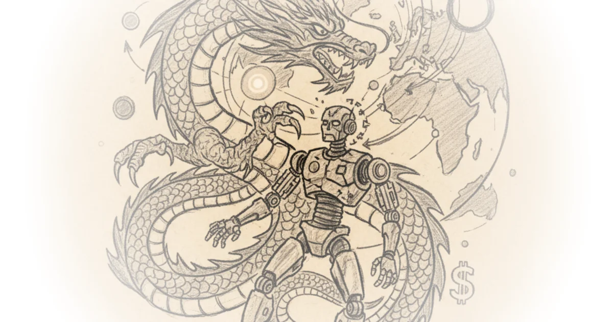

Kuka: When China Bought Germany's Robots
Commentary by Brian Edwards
Transcript excerpt on Asianometry
the mid-2010s saw a massive buying spree by some of china's biggest multinational companies wielding huge pocketbooks these companies bought and attempted to buy some of the world's most valuable assets in this video we look at one of china's most controversial corporate halls the german company kuka this purchase became intensely political and heralded a new attitude of suspicion towards chinese money but first i want to take the time to ask you to subscribe to the asian amateur newsletter i'm starting to get on a bit of a role in putting out new original content that's in addition to what you might find in the videos a few of you first stumbled on this channel because the tsmc content that i've been putting out recently it's been a real pleasure to write and share what i've learned as well as my thoughts on the company and the industry i just recently finished up a retouch of the tsmc explainer that i first wrote over two years ago when i first began posting about the subject expect to see that soon on the hnometry newsletter you can find the link to the newsletter in the video description below or you can just go to asianometry.com subscribe and i'll try to make it worth your while and you can expect a new newsletter every four days at one am taiwan time thanks so i want to start with a question why should i care why does this matter am i being racist singling out china and the such i want to go over kind of what worries policy makers large chinese companies are often perceived as being extensions of chinese communist party policy this is the case even when on the surface they do not seem to be state owned as in their shares are not directly held by the state this is for several reasons for one thing five percent of chinese quote-unquote private companies are under the direct control of high-ranking party members in addition what influence means in china is extremely informal and hard to track for example family lines and the such additionally every chinese company of a certain size is obligated to establish a communist party committee for its members this is ostensibly for the purpose of organizing social events for the company's employees who are also party members but i think it's hard to ...